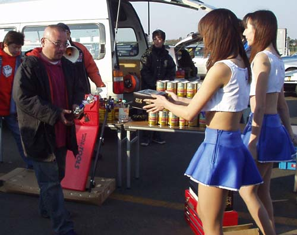
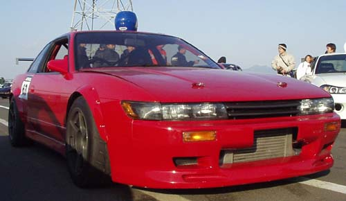
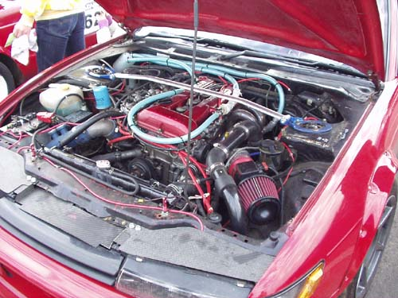

CARBOY 峠チャンプ決定戦
2002年3月3日 筑波サーキット1000にて参加者70数台により行われた峠チャンプ決定戦。
大垂水エリア，奥多摩エリア，千葉エリア，箱根エリアから集まった参加者の中、最後の最後に自己ベストラップを叩き出し、我等がつよし 見事上位入賞！！
詳細はCARBOY 2002年5月号 にて！
大垂水エリア，奥多摩エリア，千葉エリア，箱根エリアから集まった参加者の中、最後の最後に自己ベストラップを叩き出し、我等がつよし 見事上位入賞！！
詳細はCARBOY 2002年5月号 にて！
動画クリップ
イベントレポート

トロフィーの授与
本人コメント：8年ぶりのサーキットランで楽しかったけど、俺はやっぱり峠の方がイイや。

GTウイング装着でより一層逞しくなった毒マシン

ブースト1.6キロに耐えて頑張ったエンジン
SR20＋GT2540R＋POWER FC制御により350馬力以上を発生
他のメンバーは？ (^^;